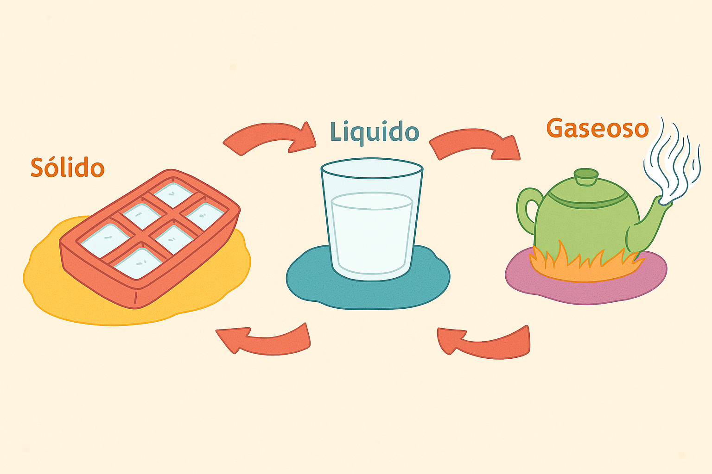

Producción creativa
Observa con atención la siguiente imagen, luego deberás dibujarla en tu cuaderno de Ciencias Naturales. Deberás analizar muy bien los cambios de estado de la materia que se dan entre cada uno de los elementos que se presentan y completar el esquema con los nombres que estos cambios reciben, según corresponda (fusión, condensación, evaporación, solidificación).
Para finalizar, redacta un texto coherente en el que se explique los diferentes cambios de estados representados en la imagen, recuerda utilizar el vocabulario correcto que se ha trabajado en clase.
